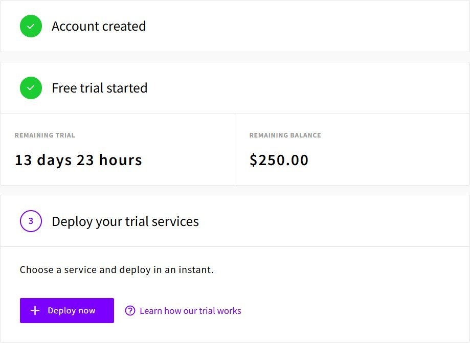
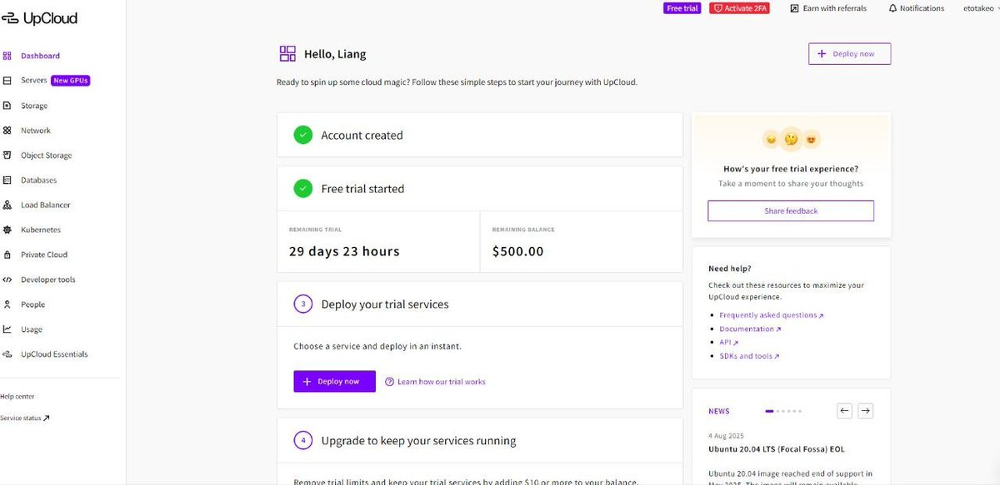

奶昔🥤
@realNyarime
欧洲老牌云服务商UpCloud新户通过专属链接注册送250刀余额，需绑卡、有效期半个月，可用于购买VPS等云资源
1️⃣ 注册账号：点击专属优惠链接 https://t.co/86hdViSxlm
2️⃣ 绑定验证：绑定一张卡（Visa/MasterCard）用于验证身份
3️⃣ 完成注册：赠金立即到账，随意开通 VPS 或对象存储
绑定卡后，建议前往 https://t.co/a5UBSYoPLA 删除银行卡信息，避免被反薅！以前这家送500刀1个月，现在减半了，估计被薅怕了

